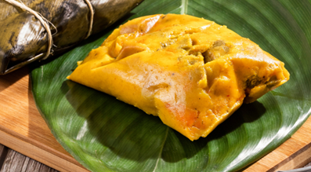

Tamal tolimense
El tamal Tolimense es un plato típico de Colombia, el cual se puede comer en el desayuno, el almuerzo o fechas especiales, este tamal, está compuesto por maíz blanco trillado, trozos de pollo, tocino con cuero, costilla de cerdo, cebolla larga o cebollín, ajo, achiote, arroz cocido, alverja seca y cocida, papa blanca, zanahoria, huevo cocido, todo esto, este envuelto las hojas de plátano y amaradas con una cuerda o cabuya.
La historia detrás del tamal Tolimense, se origina en las antiguas culturas indígenas de los Pijaos y Muiscas, los cuales hacían su comida principalmente con maíz, cocido en hojas de bijao o plátano, por eso, cuando llegaron los españoles, empezaron a agregar nuevos ingredientes como arroz, carne de cerdo, garban, entre otros condimentos, que originaron, lo que hoy conocemos como el tamal Tolimense.
